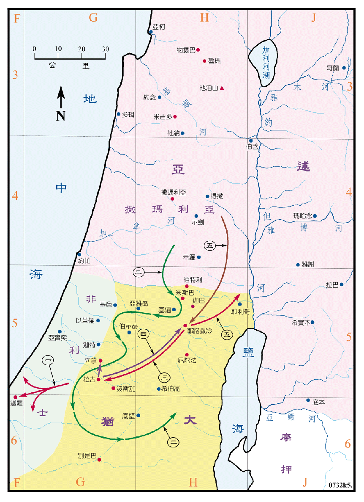

715～640BC

| 国 | 王 |
|---|---|
| 犹大国 | 希西家 (犹大王十三 715～686BC) |
| 先知 | 以赛亚 (740～681BC) |
| 玛拿西 (犹大王十四 697～642BC) | |
| 弥迦 (750～686BC) | |
| 亚们 (犹大王十五 641～640BC) | |
| 那鸿 (664～612BC) |
行动线说明
犹大王希西家
| 序号 | 圣经 | 说明 |
|---|---|---|
| 王下18:1-7，代下29，30，31 章 | 希西家登基，作王廿九年，他寻求耶和华，行他眼中看为正的事，他召集犹大人和以色列人到耶路撒冷守逾越节，他废去邱坛和木偶，使百姓专心遵守耶和华的律法，他专靠耶和华，总不离开，耶和华与他同在，行事尽都亨通。他背叛亚述王，不肯事奉亚述。 | |
| 一、 | 王下18:8 | 他攻击非利士人，直到迦萨及其四境。 |
| 二、 | 王下18:13 | 希西家十四年 (701BC)，亚述王西拿基立上来，攻击犹大的坚固城，将城攻取。 |
| 三、 | 王下18:16 | 希西家派人去拉吉请降，亚述王罚了犹大王三百他连得金子，就退去了。 |
| 四、 | 王下18:17-19:36，代下32:1-23 | 约十三年后，亚述王西拿基立又上来攻打耶路撒冷，希西家就挖沟挖水池，引水入城，又修筑所有拆毁的城墙，在城外又筑一城，以坚固大卫的米罗。王又到耶和华的殿求告，先知以赛亚就预言神必拯救，当夜耶和华的使者出去，在亚述营中杀了十数万人，亚述王就回去了。 |
| 王下20:1-11，代下32:24-25 | 希西家因病的要死而求神，神医治了他的病，又增加他十五年的寿数，再给日影往后退了十度的兆头，但希西家并没有照他所蒙的恩，报答耶和华。 | |
| 王下20:12-19，代下32:31 | 希西家病愈后，巴比伦王派他的儿子送书信和礼物给他，他请其参观了宝库和武库，及家中的一切和国中的奇事，以赛亚不悦，预言后必遭灾。 |
犹大王玛拿西
| 序号 | 圣经 | 说明 |
|---|---|---|
| 王下21:1-17，代下33:1-10 | 希西家死后，他儿子玛拿西接续他作五十五王。他引诱犹大人行恶，不听耶和华的警戒。 | |
| 五、 | 代下33:11-13 | 神使亚述王来攻击，用铙钩钩住玛拿西，用铜链锁住他带到巴比伦去，神垂听了他自卑的祈祷，使他归回耶路撒冷，这才知道惟独耶和华是神。 |
| 代下33:14-20 | 此后玛拿西整建耶路撒冷城，除掉外邦人的神像，拆毁邱坛，使民事奉耶和华。他儿子亚们接续他作王。 |
犹大王亚们
| 序号 | 圣经 | 说明 |
|---|---|---|
| 王下21:19-24，代下33:21-25 | 亚们登基作王两年，他行耶和华眼中看为恶的事，他的臣仆杀了他，立他的儿子约西亚接续他作王。 |
希西家王寻求神，不屈从亚述，引起亚述两度攻打，第二次得到神的拯救。玛拿西先是离弃神，而被亚述人掳到巴比伦，神垂听了他自卑的祷告被释回国后，才领导人民事奉耶和华。
此时巴比伦仍是亚述帝国的一个省，而且日渐强大，是日后巴比伦帝国的前身。